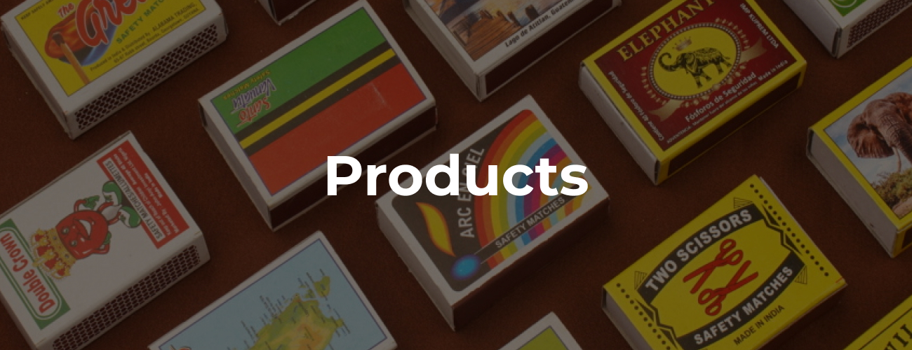

We at bglobal India, a team of decade old veterans in the manufacture of safety matches decided to join hands with the aim to offer appropriate solutions to handle the demand for safety matches. We are proud to be a top matchbox manufacturers and supplier of matchboxes in India , bridging continents with the flicker of a flame. With our consistent dedication to quality and innovation, we have made a name for ourselves in the market of safety matches in Africa and Latin America by manufacturing high-quality Matchsticks.
We at bglobal India, a team of decade old veterans in the manufacture of safety matches decided to join hands with the aim to offer appropriate solutions to handle the demand for safety matches. We are proud to be a top matchbox manufacturers and supplier of matchboxes in India , bridging continents with the flicker of a flame. With our consistent dedication to quality and innovation, we have made a name for ourselves in the market of safety matches in Africa and Latin America by manufacturiWe have extended our reach to the far reaches of the globe from Tamil Nadu, India. With decades of experience, we set out with the goal of giving clients all over the world secure matches. We are a shining example of greatness today, illuminating lives everywhere we strike a match. We are known as the best safety matches exporters around the globe.
We never skimp on quality or safety. In each matchbox we manufacture, safety is important to us. Our cutting-edge production facilities employ stringent quality control techniques as they expertly make each matchsticks. The meticulous selection of premium raw materials and thorough inspection of the finished product are just two of the many steps we take to ensure that we are offering matches of the highest quality and safety. ng high-quality Matchsticks.
Our extensive selection of matchboxes meets the specific requirements of numerous markets. Bglobal India has the ideal product for any need, whether it be home matches, safety matches or specialty matches. In order to stay ahead of the curve and satisfy the always changing needs of our prestigious customers, we continuously innovate and evolve our product offerings.